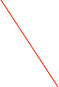
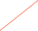
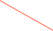
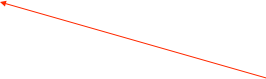
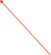
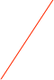
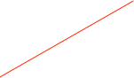

Plotting


Plots are opened by double-clicking items in the Data Monitor windows. Also see Custom Plotter.
Some scripting examples are below.

Analysis drawer

Tool bar for plots: switch Y-axis from log to linear, clear plot, show analysis window, etc...
Plot controls: auto-scale plot, reset axes, center peak, move view on the X-axis right and left (< > buttons), zoom in or out on X-axis (+ - buttons)
Hide/Show plot controls


The Raw/Plot option will toggle between the regular plotting view and a numerical list of list values


Region of Interest (ROI) for analysis. Name appears at top as Curve,ROI number. Drag lines with mouse to change region. Shift-Click makes a new ROI. Tab key shifts between multiple ROIs.
Drag scales with mouse to change range
Curve Fitting
Select type of curve fit. Use delete button to remove a fit from the plot.
Fit Parameters. If more that one ROI and fit exist, use the Tab key to toggle to next set.
Keyboard Shortcuts
Drag the axis to manually scale
Tab Change focus to next ROI or data set.
R Reset X axis to max, Reset Y
X Autoscale X
Y Autoscale Y
A Autoscale X and Y
Cmd-T Tile all similar plots across screen
Cmd-U Undo the Tile command
Cmd-Click axis to place a marker
Cmd-Drag in plot to read out values at any point
Cntrl-Drag a box in the plot to zoom to area
Shift-Click to add ROI
Delete removes ROI (last one can not be deleted)
Opt-click shrink ROI to one chan width and moves it to the mouse position
Left/Right arrow moves ROI one channel Left/Right
To do a curve fit, the OrcaROOT fit service must be running somewhere. The default location is crunch4.npl.washington.edu port 9090, but you may run OrcaROOT at a custom location.
To do a fit with a user supplied equation, select arbitrary as the fit type, and enter an equation in a format that is compatible with ROOT, i.e. [0] + [1]*x + [2]*x^2

Scripting
ORCAScripts can be used to automate and use some of the analysis functions, either directly using the values from the simple statistics collected by the ORCA analysis tool or by using the more powerful fitting services provided by by OrcaROOT. If running a script against multiple plots, see the GOTCHA
in the example below.
An ORCAScript example to do a quadratic fit on one of the DataGen plots:
function main()
{
//find the dataset
ds = find(ORHistoModel,1);
dataset = [ds dataSetWithName:"DataGen,0,1"];
//get the dataset dialog and open the analysis drawer
[dataset makeMainController];
plot = [dataset findController];
[plot openAnalysisDrawer];
//set up the region of interest
roi = [plot curve:0 roi:0];
[roi setMinChannel:100];
[roi setMaxChannel:550];
sleep(1); //wait a bit for the drawer to open and the analysis to be done
//find the fitter and do a arbitrary fit
fitter = [[plot fitController] model];
[fitter doArbitraryFit:"[0]+[1]*x+[2]*x^2"];
if(waituntil([fitter fitValid],5)){
n = [fitter fitParamCount];
for(i=0;i<n;i++){
print [fitter fitParamName:i],"=",[fitter fitParam:i],"+/-",[fitter fitParamError:i];
}
print "Chi Square: ",[fitter chiSquare];
}
[plot close]; //POTENTIAL GOTCHA -- if you are working with more that one plot
//you must close the window after getting the analysis values
//otherwise if you have ORCA set to share windows then the wrong
//analysis drawer will be attached to the window.
//Closing the window resets everything
Running this script resulted in the following output in the status log:
010610 13:49:55 [OrcaScript] p0 = -32.0722 +/- 1.57874
010610 13:49:55 [OrcaScript] p1 = 0.274086 +/- 0.00934255
010610 13:49:55 [OrcaScript] p2 = -0.000382105 +/- 0.000012418
010610 13:49:55 [OrcaScript] Chi Square: 27.8595
Some knowledge of the types of fit parameters returned from ROOT is needed to determine which functions to call and which values to grab when the fit is done.
Some of the fitting functions you can call:
[fitter doGaussianFit];
[fitter doLandauFit];
[fitter doExponentialFit];
[fitter doPolynomialFit: fitOrder] -- does a polynomial fit of any order
[fitter doArbitraryFit:”ROOT-Type fit function”] -- fit a function like “[0] + [1]*x + [2]*x^x”. Use the standard ROOT format for the function string.
[fitter doFitType: fitType] --where fitTypes are gaussian = 0, exponential = 1, landau = 3. Note that fitTypes 2 and 4 are covered by the doLinearFit and doArbitraryFit functions. The fitType is the index of the fit popup item in the analysis drawer. Use this if we add additional fits to the set and don’t include a separate fit method to call.
[fitter doFitType: fitType fitOrder:order fitFunction:”ROOT-Type fit function”] --same as above but giving more options. The fitType is the index of the fit popup item in the analysis drawer. Use this if we add additional fits to the set and don’t include a separate fit method to call.

Markers


Put an arbitrary number of markers onto an axis by Cmd-Clicking in the axis
Remove an existing marker by Cmd-Clicking on it